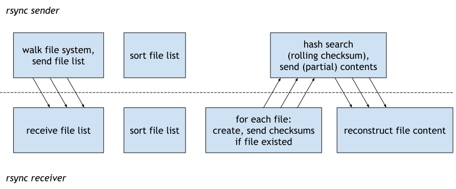

Table of contents
This post is the third article in a series of blog posts about rsync, see the Series Overview.
With rsync up and running, it’s time to take a peek under the hood of rsync to better understand how it works.
How does rsync work?
When talking about the rsync protocol, we need to distinguish between:
- protocol-level roles: “sender” and “receiver”
- TCP roles: “client” and “server”
All roles can be mixed and matched: both rsync clients (or servers!) can either send or receive.
Now that you know the terminology, let’s take a high-level look at the rsync
protocol. We’ll look at protocol version 27, which is older but simpler, and
which is the most widely supported protocol version, implemented by openrsync
and other third-party implementations:

The rsync protocol can be divided into two phases:
-
In the first phase, the sender walks the local file tree to generate and send the file list to the receiver. The file list must be transferred in full, because both sides sort it by filename (later rsync protocol versions eliminate this synchronous sorting step).
-
In the second phase, concurrently:
- The receiver compares and requests each file in the file list. The receiver requests the full file when it didn’t exist on disk yet, or it will send checksums for the rsync hash search algorithm when the file already existed.
- The receiver receives file data from the sender. The sender answers the requests with just enough data to reconstruct the current file contents based on what’s already on the receiver.
The architecture makes it easy to implement the second phase in 3 separate processes, each of which sending to the network as fast as possible using heavy pipelining. This results in utilizing the available hardware resources (I/O, CPU, network) on sender and receiver to the fullest.
Observing rsync’s transfer phases
When starting an rsync transfer, looking at the resource usage of both machines allows us to confirm our understanding of the rsync architecture, and to pin-point any bottlenecks:

- phase: The rsync sender needs 17 seconds to walk the file system and send
the file list. The rsync receiver reads from the network and writes into RAM
during that time.
- This phase is random I/O (querying file system metadata) for the sender.
- phase: Afterwards, the rsync sender reads from disk and sends to the
network. The rsync receiver receives from the network and writes to disk.
- The receiver does roughly the same amount of random I/O as the sender did in phase 1, as it needs to create directories and request missing files.
- The sender does sequential disk reads and possibly checksum calculation, if the file(s) existed on the receiver side.
(Again, the above was captured using rsync protocol version 27, later rsync protocol versions don’t synchronize after completing phase 1, but instead interleave the phases more.)
rsync hash search
Up until now, we have described the rsync protocol at a high level. Let’s zoom into the hash search step, which is what many people might associate with the term “rsync algorithm”.
When a file exists on both sides, rsync sender and receiver, the receiver first divides the file into blocks. The block size is a rounded square root of the file’s length. The receiver then sends the checksums of all blocks to the sender. In response, the sender finds matching blocks in the file and sends only the data needed to reconstruct the file on the receiver side.
Specifically, the sender goes through each byte of the file and tries to match existing receiver content. To make this less computationally expensive, rsync combines two checksums.
rsync first calculates what it calls the
“sum1”,
or “fast signature”. This is a small checksum (two uint16) that can be
calculated with minimal effort for a rolling window over the file data. tridge
rsync comes with SIMD
implementations
to further speed this up where possible.
Only if the sum1 matches will “sum2” (or “strong signature”) be calculated, a 16-byte MD4 hash. Newer protocol versions allow negotiating the hash algorithm and support the much faster xxhash algorithms.
If sum2 matches, the block is considered equal on both sides.
Hence, the best case for rsync is when a file has either not changed at all, or shares as many full blocks of content as possible with the old contents.
Changing data sets
Now that we know how rsync works on the file level, let’s take a step back to the data set level.
The easiest situation is when you transfer a data set that is not currently changing. But what happens when the data set changes while your rsync transfer is running? Here are two examples.
debiman, the manpage generator powering manpages.debian.org is running on a Debian VM on which an rsync job periodically transfers the static manpage archive to different static web servers across the world. The rsync job and debiman are not sequenced in any way. Instead, debiman is careful to only ever atomically swap out files in its output directory, or add new files before it swaps out an updated index.
The second example, the PostgreSQL
database management system, is the opposite situation: instead of having full
control over how files are laid out, here I don’t have control over how files
are written (this generalizes to any situation where the model of only ever
replacing files is not feasible). The data files which my Postgres installation
keeps on disk are not great to synchronize using rsync: they are large and
frequently change. Instead, I now exempt them from my rsync transfer and use pg_dump(1)
to create a snapshot of my databases instead.
To confirm rsync’s behavior regarding changing data sets in detail, I modified rsync to ask for confirmation between generating the file list and transferring the files. Here’s what I found:
- If files are added after rsync has transferred the file list, the new files will just not be part of the transfer.
- If a file vanishes between generating the file list and transfering the file,
rsync exits with status code 24, which its manpage documents as “Partial
transfer due to vanished source
files”. My
rsyncprommonitoring wrapper offers a flag to treat exit code 24 like exit code 0, because depending on the data set, vanishing files are expected. - If a file’s contents change (no matter whether the file grows, shrinks, or is
modified in-place) between generating the file list and the actual file
transfer, that’s not a problem — rsync will transfer the file contents as it
reads them once the transfer starts. Note that this might be an inconsistent
view of the data, depending on the application.
- Ideally, don’t ever modify files within a data set that is rsynced. Instead, atomically move complete files into the data set.
Another way of phrasing the above is that data consistency is not something that rsync can in any way guarantee. It’s up to you to either live with the inconsistency (often a good-enough strategy!), or to add an extra step that ensures the data set you feed to rsync is consistent.
Next up
The fourth article in this series is rsync, article 4: My own rsync implementation (To be published.)
Appendix A: rsync confirmation hack
For verifying rsync’s behavior with regards to changing data sets, I checked out the following version:
% git clone https://github.com/WayneD/rsync/ rsync-changing-data-sets
% cd rsync-changing-data-sets
% git checkout v3.2.4
% ./configure
% make
Then, I modified flist.c to add a confirmation step between sending the file
list and doing the actual file transfers:
diff --git i/flist.c w/flist.c
index 1ba306bc..98981f34 100644
--- i/flist.c
+++ w/flist.c
@@ -20,6 +20,8 @@
* with this program; if not, visit the http://fsf.org website.
*/
+#include <stdio.h>
+
#include "rsync.h"
#include "ifuncs.h"
#include "rounding.h"
@@ -2516,6 +2518,17 @@ struct file_list *send_file_list(int f, int argc, char *argv[])
if (DEBUG_GTE(FLIST, 2))
rprintf(FINFO, "send_file_list done\n");
+ char *line = NULL;
+ size_t llen = 0;
+ ssize_t nread;
+ printf("file list sent. enter 'yes' to continue: ");
+ while ((nread = getline(&line, &llen, stdin)) != -1) {
+ if (nread == strlen("yes\n") && strcasecmp(line, "yes\n") == 0) {
+ break;
+ }
+ printf("enter 'yes' to continue: ");
+ }
+
if (inc_recurse) {
send_dir_depth = 1;
add_dirs_to_tree(-1, flist, stats.num_dirs);
My rsync invocation is:
./rsync -av --debug=all4 --protocol=27 ~/i3/src /tmp/DEST/
It’s necessary to use an older protocol version to make rsync generate a full file list before starting the transfer. Later protocol versions interleave these parts of the protocol.
I run a blog since 2005, spreading knowledge and experience for almost 20 years! :)
If you want to support my work, you can buy me a coffee.
Thank you for your support! ❤️